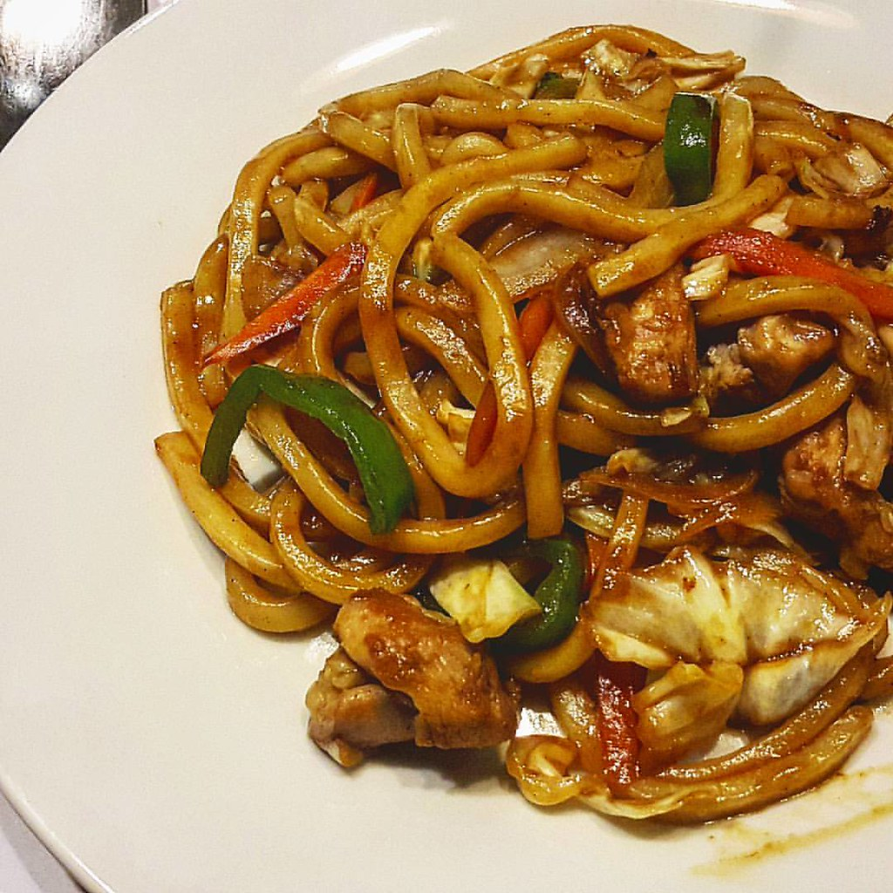

Yaki Udon
Home

Description
Yaki Udon is a Japanese stir-fry dish is a great dish to make when you just want something simple. This dish uses thick udon noodles, soy sauce, and a lot of vegetables. You can also customize this dish to your liking, adding meat or tofu if you want.
Ingredients
- 1/4 cup Oyster Sauce
- 3 tablespoons Soy Sauce
- 2 tablespoons Mirin
- 1 tablespoon Worcestershire Sauce
- 2 tablespoons Toasted Sesame Oil
- 1 tablespoon Packed Light Brown Sugar
- 1 teaspoon Sriracha Sauce
- 1 medium Garlic, Grated
- 1 medium (5-oz.) bunch Scallions
- 2 tablespoons Canola Oil
- 12 ounces Sliced Mixed Wild Mushrooms Mix (Cremeni, Oyster, and Shiitake)
- 2 medium heads Baby Bok Choy, thinly sliced
- 1 (10 ounce) package Carrots, cut into match-stick size pieces
- 1/2 cup Water, divided
- 1 (14 ounce) package Pre-Cooked Udon Noodles
- Optional garnishes: Thinly-sliced Nori, Cilantro, Lime Wedges, Furikakae Seasoning